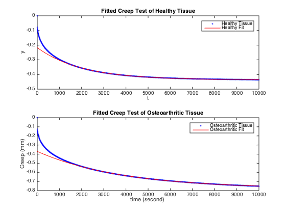

Contents
clc, clear all
Question 1
disp('Question 1')
Name = '/BIOE404-F14-HW7data.csv';
currentFolder = pwd;
filename = strcat(currentFolder, Name);
A = csvread(filename, 1, 0);
t = A(:, 1);
Healthy = A(:, 2);
Ostheo = A(:, 3);
stress = (-2/0.00365);
[fitresult, gof] = createFits(t, Healthy, Ostheo);
figure
subplot(2, 1, 1), plot(fitresult{1}, t, Healthy),...
legend('Healthy Tissue', 'Healthy Fit', 'Location', 'NorthEast'),...
title('Fitted Creep Test of Healthy Tissue')
subplot(2, 1, 2), plot(fitresult{2}, t, Ostheo),...
legend('Osteoarthritic Tissue', 'Osteoarthritic Fit', 'Location', 'NorthEast'),...
title('Fitted Creep Test of Osteoarthritic Tissue')
xlabel('time (second) '), ylabel('Creep (mm)')
disp('Healthy Tissue')
gof(1)
fitresult{1}
disp([10 'Osteoarthritic Tissue'])
gof(2)
fitresult{2}
disp([10 'Explanation:'])
disp(['The Healthy Tissue has Youngs moduli of E1 = 1.093 and E2 = 1.083, which are roughly twice the size of the moduli ' 10 'for Osteoarthritic Tissue, E1 = 0.5675 and E2 = 0.5123. This means that the Osteoarthritic Tissue is more stiff and ' 10 'will only strain half as much as the healthy tissue under the same load. The Healthy Tissue has a moduli close to one ' 10 'and thus can be thought of elastic.'])
disp([10 'The Healthy Tissue has a mu of 1086, which is roughly the same as the Osteoarthritic Tissue with a mu of 1028. ' 10 'So both have a similar dashpot element and similar viscosity.'])
disp([10 'The greatest difference between the two tissues is the Youngs Moduli, which contributes to the difference in the creep test plots.' 10 ' The Osteoarthritic tissue is stiffer causing it to more readily strain.'])
Question 1
Healthy Tissue
ans =
sse: 0.0011
rsquare: 0.9999
dfe: 1998
adjrsquare: 0.9999
rmse: 7.5215e-04
ans =
General model:
ans(t) = [-2/(1.16*3.65)]*(1/B+(1/(A+B)-(1/B))*exp((-A*B)/(u*(A+B))*t))
Coefficients (with 95% confidence bounds):
A = 1.093 (1.091, 1.094)
B = 1.083 (1.083, 1.083)
u = 1086 (1085, 1087)
Osteoarthritic Tissue
ans =
sse: 0.0045
rsquare: 0.9999
dfe: 1998
adjrsquare: 0.9999
rmse: 0.0015
ans =
General model:
ans(t) = [-2/(1.32*3.79)]*(1/B+(1/(A+B)-(1/B))*exp((-A*B)/(u*(A+B))*t))
Coefficients (with 95% confidence bounds):
A = 0.5675 (0.5669, 0.5682)
B = 0.5123 (0.5121, 0.5125)
u = 1028 (1026, 1030)
Explanation:
The Healthy Tissue has Youngs moduli of E1 = 1.093 and E2 = 1.083, which are roughly twice the size of the moduli
for Osteoarthritic Tissue, E1 = 0.5675 and E2 = 0.5123. This means that the Osteoarthritic Tissue is more stiff and
will only strain half as much as the healthy tissue under the same load. The Healthy Tissue has a moduli close to one
and thus can be thought of elastic.
The Healthy Tissue has a mu of 1086, which is roughly the same as the Osteoarthritic Tissue with a mu of 1028.
So both have a similar dashpot element and similar viscosity.
The greatest difference between the two tissues is the Youngs Moduli, which contributes to the difference in the creep test plots.
The Osteoarthritic tissue is stiffer causing it to more readily strain.

Question 2
disp('Question 2')
disp(['A: The time scale of the first test is 2x the length of time as the second test, but include the same number of waves, ' 10 ' which means that the first test responds much slower to the cyclical strain and is much more viscous.'])
disp('B:')
[storage, loss, delta1] = storeloss(6, 0.03, 0.25, 1.3);
disp(['For test 1, the storage moduli is: ' num2str(storage)])
disp(['For test 1, the loss moduli is: ' num2str(loss)])
percent_contribution_1 = storage/(storage + loss);
[storage, loss, delta2] = storeloss(12, 0.03, 0.05, 0.65);
disp(['For test 2, the storage moduli is: ' num2str(storage)])
disp(['For test 2, the loss moduli is: ' num2str(loss)])
percent_contribution_2 = storage/(storage + loss);
disp('C:')
disp(['The closer delta is to 0, the more elastic the element is, while the closer to 2pi the element is approaching perfectly ' 10 ' viscous. In this case, test 1 has a delta of ' num2str(delta1) ' while the delta for test 2 is ' num2str(delta2)])
disp(['The deltas can then be used to calculate the contribution of viscous or elastic elements to the total response of the system. ' 10 'When normalized to the total loss + storage moduli, the percent contribution of the elastic element is ' num2str(percent_contribution_1*100) '% in tests 1, ' 10 'versus in test 2: ' num2str(percent_contribution_2*100) '%. This means that test 2 is considerably more elastic and is approaching perfectly elastic, ' 10 'while test 1 has a much larger viscous contribution.'])
Question 2
A: The time scale of the first test is 2x the length of time as the second test, but include the same number of waves,
which means that the first test responds much slower to the cyclical strain and is much more viscous.
B:
For test 1, the storage moduli is: 70.921
For test 1, the loss moduli is: 187.0032
For test 2, the storage moduli is: 354.1824
For test 2, the loss moduli is: 185.8893
C:
The closer delta is to 0, the more elastic the element is, while the closer to 2pi the element is approaching perfectly
viscous. In this case, test 1 has a delta of 1.2083 while the delta for test 2 is 0.48332
The deltas can then be used to calculate the contribution of viscous or elastic elements to the total response of the system.
When normalized to the total loss + storage moduli, the percent contribution of the elastic element is 27.4968% in tests 1,
versus in test 2: 65.5806%. This means that test 2 is considerably more elastic and is approaching perfectly elastic,
while test 1 has a much larger viscous contribution.